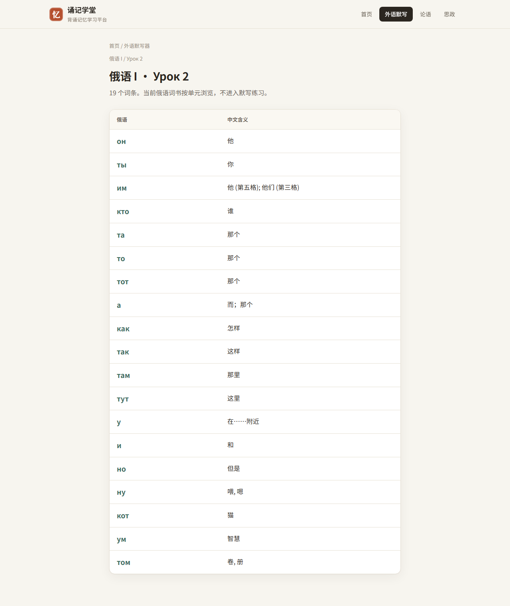

把资料收进同一个学习场
官方外语、论语、思政内容和个人牌组放在一起，不用在文档、截图和表格之间来回找。
诵记学堂帮你把外语词书、经典原文、思政题库和自建资料集中管理，用默写、卡片和间隔复习解决“背了很多、忘得更快、复习没章法”的问题。

从输入、练习到复习，每一步都围绕“能不能真正记住”设计。
官方外语、论语、思政内容和个人牌组放在一起，不用在文档、截图和表格之间来回找。
看提示写答案，比单纯看一遍更容易暴露薄弱点，适合单词、句子、概念和背诵材料。
按遗忘规律把新卡、错题和待复习内容排进队列，减少“我是不是该复习了”的犹豫。
集中浏览官方外语、论语和用户公开牌组；按标签筛选，也可以收藏常用记忆牌组。
创建本地资料空间后可制作个人背诵牌组；公开牌组会出现在牌组列表，私密牌组只对你可见。
用复习记录、掌握率和未来待复习预测看清自己的学习节奏，知道下一步该补哪里。